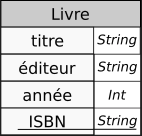
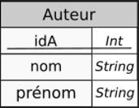
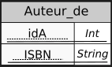

Commandes de base en SQL : créations de tables et types de données
Une utilisation efficace des bases de données relationnelles n'est réalisable qu'avec un SGBDR (Système de Gestion de Bases d Données Relationnelles), c'est-à-dire un logiciel offrant :
- la définition des données sous forme de relations ;
- la manipulation des données par un langage déclaratif ;
- l’administration des données.
Dans ce chapitre, nous nous contenterons d'utiliser de manière sommaire des fonctionnalités de SGBDR offertes :
- soit par les notebooks Capytale ;
- soit par le logiciel portable DB Browser for SQLite ;
- soit par l'intermédiaire de modules python.
Du modèle relationnel à la base de donnée : une première approche
SQL (Structured Query Language) est directement inspiré du modèle relationnel défini dans la partie précédente. Ce langage est standardisé par la norme ISO/IEC 9075, dont la dernière version date de 2016.
La syntaxe du SQL est volontairement verbeuse et proche de l'anglais standard. Nous allons montrer dans les exemples suivants la création d'une table, l'insertion d'éléments ainsi que quelques requêtes simples sur cette base de donnée.
Une première approche du SQL
Rendez-vous dans le bac-à-sable SQL(Code 4df6-948322) sur Capytale.
- Exécutez les 4 premières cellules.
- Exécutez la cinquième. Quel est le résultat fournit par cette requête ?
- Exécutez la sixième. Quel est le résultat fournit par cette requête ?
-
Ajoutez à la base de données l'entité suivante :
('Brochen', 'Charles', 'charles.brochen@pontrieux.fr', '22260', '13 Rue de Pen Fantan, Pontrieux', '2024-10-11', '012345678910113')Que se passe-t-il ? Pourquoi ? -
Ajoutez à la base de données l'entité suivante :
('Pavie', 'Auguste', 'auguste.pavie@ggp.fr', '22200', '13 rue Anatole Le Braz, Guingamp', '2024-11-09', '012345678910110')
Que se passe-t-il ? Pourquoi ? -
Exécutez maintenant une requête afin de récupérer une table contenant les emails et code postaux des usagers dont la date d'inscription est le 10 Novembre 2024.
Exemple : Création de la table usager
Les lignes de code SQL suivantes permettent la création d'une table usager, qui correspond globalement à la relation Usager telle que définie par le schéma :
Usager(nom String, prénom String, email String, cp String, adresse String, inscription Date, code_barre String)
CREATE TABLE usager (nom VARCHAR(90),
prenom VARCHAR(90),
email VARCHAR(60),
cp VARCHAR(5),
adresse VARCHAR(90),
inscription DATE,
code_barre CHAR(15) PRIMARY KEY);
On envoie ici au SGBD un ordre SQL de création de table, par l’intermédiaire de la commande CREATE TABLE.
Le nom de la table sera usager. Cette table contiendra des colonnes (ou champs) qui correspondent aux attributs de la relation.
- La première colonne
nomest définie comme étant du typeVARCHAR, c'est-à-dire chaine de caractère, avec une contrainte de longueur maximale de 90 caractères. Il en est de même pour les 5 premières colonnes, avec différentes contraintes de longueur. - La colonne
inscriptionest définie comme étant du typeDATE. - La dernière colonne
code_barreest définie comme étant du typeVARCHARde longueur maximale 15, auquel on adjoint la contraintePRIMARY KEY, qui indique simplement qu'il s'agit bien de la clé primaire de la relation.
On remarque que l'ordre se termine par un ;.
SQL et case des caractères
SQL est insensible à la casse. Il aurait été tout aussi efficace d'écrire create table ou CrEaTE tABlE.
De fait certaines règles de bonnes pratiques sont à suivre :
- les mots réservés de SQL sont écrits en majuscules ;
- les attributs sont écrits en minuscules, ainsi que les noms de tables1 ;
- les noms d'attributs et de tables ne pouvant contenir d'espaces, ceux-ci sont remplacés par le caractère
_(underscore). - les noms de table sont écrits au singulier.
Exemple : insertions de lignes
Les lignes SQL suivantes permettent l'insertion de trois lignes dans la table usager, qui correspondent à trois entités de la relation Usager.
INSERT INTO usager VALUES
('Pavie', 'Auguste', 'auguste.pavie@ggp.fr', '22200', '13 rue Anatole Le Braz, Guingamp', '2024-11-09', '012345678910111'),
('Prevert', 'Jacques', 'jacques.prevert@ggp.fr', '22200', '58 Rue de la Trinité, Guingamp', '2024-11-10', '012345678910112'),
('Camus', 'Albert', 'albert.camus@grace', '22205', '2 Rue de Kerpaour, Grâces', '2024-10-09', '012345678910113')
;
Chacune des lignes est un tuple, chaque composante correspondant à la colonne définie dans l'ordre de création de table, dans l'ordre de définition (NB : il existe un moyen d'être plus explicite et de s'affranchir de l'ordre, que nous verrons plus tard*).
Vous pouvez constater que dans la troisième ligne, l'email n'est pas correctement écrit. Nous n'avons pour l'instant pas mis de contraintes supplémentaires sur le champ email, donc le SGBD acceptera cette entrée comme correcte.
Exemple : Première requête
Nous allons maintenant interroger cette table par l'intermédiaire d'une requête (query en anglais) :
SELECT
nom, prenom
FROM
usager;
| nom | prenom |
|---|---|
| Pavie | Auguste |
| Prevert | Jacques |
| Camus | Albert |
c'est-à-dire une table avec les attributs nom et prenom.
Différences entre modèle relationnel et SQL
Formellement, SQL n'est pas aussi strict que le modèle relationnel. En effet une table ne doit pas obligatoirement posséder une clé primaire.
La conséquence directe de ce choix est une violation de la contrainte de relation, et il est tout à fait possible d'avoir des doublons dans une table, ce qui sera toléré par SQL. Mais c'est une mauvaise pratique !
Types de données en SQL
Selon le SGBD utilisé, certaines libertés sont prises par rapport aux standards édictés par l'ISO. On peut néanmoins dégager des constantes dans les différents types utilisés
Types numériques
Types numériques
De manière générale, le standard SQL définit des types numériques représentants de manière exacte ou approchée.
| nom du type | exact/approché | description |
|---|---|---|
SMALLINT |
exact | Entiers signés sur 16 bits (\(-32~768\) à \(32~768\)) |
INT ou INTEGER |
exact | Entiers signés sur 32 bits (\(-2~147~483~647\) à \(2~147~483~647\)) |
BIGINT |
exact | Entiers signés sur 64 bits (\(\simeq -9\times 10^{18}\) à \(\simeq 9\times 10^{18}\)) |
DECIMAL(t,f) |
exact | Décimal signé de \(t\) chiffres dont \(f\) après la virgule |
REAL |
approché | Flottant sur 32 bits (\(-3,40\times 10^{38}\) à \(3,40\times 10^{38}\)) |
DOUBLE PRECISION |
approché | Flottant sur 64 bits (\(-1,79\times 10^{308}\) à \(1,79\times 10^{308}\)) |
On peut noter le cas particulier du type DECIMAL(t,f), qui permet du calcul en valeur exacte, par exemple sur des sommes d'argent. Par exemple, l'utilisation du type DECIMAL(5,2) permettra de travailler avec des sommes de \(-999,99\) € à \(999,99\) €.
Types textes
Types textes
En SQL, les chaines de caractères sont délimitées par des guillemets simples '. Il est possible d'échapper un guillemet simple en le doublant, comme par exemple dans 'n''oubliez pas d''échapper'.
Il est possible d'insérer un caractère retour chariot dans une chaine pour avoir des chaines multi-lignes.
| nom du type | description |
|---|---|
CHAR(n) |
Chaine d'exactement \(n\) caractères |
VARCHAR(n) |
Chaine d'au plus \(n\) caractères |
TEXT |
Chaine de taille quelconque |
- La taille maximale dépend du SGBD, mais tous supportent au moins \(8~000\) caractères. La valeur minimale pour \(n\) est 1.
- Pour le type
CHAR(n), si la chaine stockée est de longueur inférieure à \(n\), on complète la chaine à droite par le nombre d'espaces nécessaires. - Le type
TEXTest en fait un typeVARCHARde la dimension maximale supportée par le SGBD.
Types booléens
Type Booléen
Selon les SGBD, le type booléen est inégalement supporté. Dans notre cas cette année, on supposera qu'il l'est correctement (mais il existe de nombreuses possibilités pour le simuler, par exemple avec un type SMALLINT où \(0\) représente False et le reste True).
Types temporels
Types temporels
Comme déjà évoqué dans la partie précédente, les types temporels représentent parfois un cauchemar pour les programmeur.euse.s...
Nous nous contenterons ici d'aborder de manière très superficielle ces types :
| nom du type | description |
|---|---|
DATE |
Une date au format 'AAAA-MM-JJ' |
TIME |
Une heure au format 'hh:mm:ss' |
TIMESTAMP |
Un instant au format 'AAAA-MM-JJ hh:mm:ss' |
Une propriété intéressante du type DATE est qu'il supporte l'addition correctement. Si d est du type DATE, d+7 produira une date correspondante à 7 jours après d, en changeant jours, mois et années correctement.
Type NULL
Une valeur NULL existe en SQL et correspond à l'absence de donnée. Elle s'utilise comme la valeur None en Python. Elle est juste interdite pour les clés primaires.
Il est possible de tester si une valeur est nulle ou non grâce aux commandes IS NULL ou IS NOT NULL.
Créations et suppressions de tables
Création de tables
Création de tables
La création d'une table se fait par l'intermédiaire de la commande suivante :
CREATE TABLE nom_table (attribut_1 domaine_1 contrainte_1_1 contrainte_1_2 ...,
attribut_2 domaine_2 contrainte_2_1 contrainte_2_2 ...,
...,
attribut_n domaine_n contrainte_n_1...,
contrainte_globale_1,
...,
contrainte_globale_n);
Une définition d'attributs consiste en :
- la donnée d'un nom d'attribut (obligatoire) ;
- la donnée d'un domaine (obligatoire) ;
- la donnée de contraintes sur cet attribut (optionnel).
Une contrainte qui porterait sur plusieurs attributs (par exemple une définition de clé primaire sur plusieurs attributs) est reportée en fin de définition, avant la parenthèse fermante.
Exemple avec clé primaire simple
La relation Livre suivante  peut être créée en SQL par la commande suivante :
CREATE TABLE Livre (titre VARCHAR(200),
editeur VARCHAR(50),
annee SMALLINT,
ISBN CHAR(14) PRIMARY KEY);
Exécution de code
Dans le bac à sable SQL, créer la table Livre.
Exemple avec clé primaire et clés étrangères
Maintenant que nous avons créé les tables Usager et Livre, nous pouvons créer la table Emprunt telle que définie dans le schéma 
CREATE TABLE Emprunt ( code_barre CHAR(15) REFERENCES usager(code_barre),
ISBN CHAR(14) PRIMARY KEY REFERENCES Livre(ISBN),
retour DATE);
Création de code
Créer le code SQL nécessaire pour obtenir la table Auteur correspondant à la relation 
Exemple de création de clé primaire avec de multiples attributs
Pour la table Auteur_de définie par , on peut utiliser le code suivant :
CREATE TABLE Auteur_de ( idA INT REFERENCES Auteur(idA),
ISBN REFERENCES Livre(ISBN),
PRIMARY KEY(ida, ISBN));
Suppressions de tables
Suppression de tables
Pour supprimer une table, il suffit d'utiliser :
DROP TABLE nom_de_la_table;
Attention toutefois, il n'est pas possible de supprimer une table si elle sert de référence pour une clé étrangère ! Cela violerait une contrainte de référence.
Nouvelles Contraintes d'intégrités
Nous avons vu l'utilisation de PRIMARY KEY et REFERENCES, qui permettent de définir les contraintes de relation et de références. Il est possible de rajouter en SQL d'autres types de contraintes.
Contraintes d'unicité et de non-nullité
Entre autres :
- il est possible de préciser qu'un attribut (une colonne en langage SQL) ne peut être vide, en ajoutant la contrainte
NOT NULL; - de même il est possible de préciser qu'un attribut ne peut exister en doublon, en ajoutant la contrainte
UNIQUE.
Ainsi, la table Usager peut être redéfinie par :
CREATE TABLE usager (nom VARCHAR(90) NOT NULL,
prenom VARCHAR(90) NOT NULL,
email VARCHAR(60) NOT NULL UNIQUE,
cp VARCHAR(5) NOT NULL,
adresse VARCHAR(90),
inscription DATE NOT NULL,
code_barre CHAR(15) PRIMARY KEY);
Ainsi redéfinie, tous les attributs sauf l'adresse doivent être renseignés (la clé primaire ne devant pas être vide par nature). De plus l'email ne peut être qu'unique (ce qui risque de poser des problèmes pour certains couples ou pour des inscriptions d'enfants avec l'email de leur parent).
Clé primaire et auto-incrémentation
Pour les clés primaires numériques et correspondantes au type INTEGER2, il est possible de ne pas avoir à saisir à la main cette valeur. Ainsi, à chaque ajout d'une ligne (donc d'une entité) dans la table, une nouvelle valeur de clé parmi celles disponibles sera automatiquement fournie. Par exemple pour la table Auteur :
CREATE TABLE Auteur (nom VARCHAR(90) NOT NULL,
prenom VARCHAR(90) NOT NULL,
idA INTEGER PRIMARY KEY );
Dans ce cas, l'insertion sera faites avec une structure d'entité plus spécifique :
INSERT INTO Auteur(nom, prenom) VALUES
('Tolkien', 'JRR'),
('Dick', 'Philip K.'),
('Adams', 'Douglas');
On constate alors par la requête suivante la bonne insertion du champ idA:
SELECT * FROM Auteur;
Par défaut l'incrémentation commence à 1.
Auto-incrément -> Vieille version non viable en SQLite
Pour les clé primaires numériques, il est possible d'ajouter la contrainte d'auto-incrémentation de cet identifiant. Ainsi, à chaque ajout d'une ligne (donc d'une entité) dans la table, une nouvelle valeur de clé sera automatiquement fournie. Par exemple pour la table Auteur :
CREATE TABLE Auteur (nom VARCHAR(90) NOT NULL,
prenom VARCHAR(90) NOT NULL,
idA INTEGER PRIMARY KEY AUTO_INCREMENT);
Par défaut l'incrémentation commence à 1.
Contraintes spécifiques
Il est aussi possible de placer certaines contraintes spécifiques lors de la création d'une table, grâce au mot clé CHECK suivi d'une formule booléenne. Par exemple, si on souhaite introduire les années de naissance et de décès des auteurs, il est possible d'utiliser l'instruction suivante :
CREATE TABLE Auteur (nom VARCHAR(90) NOT NULL,
prenom VARCHAR(90) NOT NULL,
idA INTEGER PRIMARY KEY ,
naissance SMALLINT,
deces SMALLINT,
CHECK (naissance IS NULL OR deces IS NULL OR naissance < deces) );
Ainsi, on vérifie qu'il n'y a pas d'erreurs sur une date de naissance postérieure à une date de décès.
On notera que cette contrainte s'écrit directement après la dernière définition d'attributs et que l'expression booléenne est entre parenthèses.
Mise à jour des tables
Dans le bac à sable, mettre à jour les tables afin qu'elles correspondent aux dernières instructions données.
Insertions de données dans une table existante.
Insertion de données
Pour insérer des données dans une table existante, on utilise l'instruction ÌNSERT INTO. Il existe deux possibilités pour insérer des données :
-
En insérant les valeurs sans préciser le nom des colonnes :
les valeurs seront insérées dans l'ordre défini lors de la création de la table.INSERT INTO nom_table VALUES (valeur_1, valeur_2, ..., valeur_n); -
En insérant les valeurs en précisant les colonnes concernées :
INSERT INTO nom_table(attribut1, attribut3) VALUES (valeur1, valeur3);Ici les valeurs ne seront insérées que dans les colonnes qui correspondent au nom donné.
Exemple d'insertions
- Insertion complète :
Les informations fournies seront insérées dans l'ordre
INSERT INTO Livre VALUES("Dune", "Pocket", 2021, "978-2266320542");titre,éditeur,annéeetÌSBN. - Insertion selon les colonnes :
Seules les colonnes
INSERT INTO Livre(ISBN, titre) VALUES("978-2070319015", "H2G2, tome 1 : Le Guide du voyageur galactique ");ISBNettitresont renseignées. les autres seront mises à une valeurNULL.
Warning
Il est à noter que les contraintes d'intégrités sont vérifiées lors de l'insertion. Une instruction du type :
INSERT INTO Auteur(nom, prenom, naissance, deces) VALUES ("ADAMS", "Douglas", 2001, 1952);
donnera une erreur par violation d'intégrité3, la date de naissance étant supérieure à la date de décès.
Exercices
Exercice 1
Reprendre l'énoncé de l'exercice 1 de la fiche modèle relationnel et donner l'instruction SQL permettant de créer la table correspondante.
A venir !
Exercice 2
Reprendre l'énoncé de l'exercice 2 de la fiche modèle relationnel et donner l'instruction SQL permettant de créer les tables correspondantes.
A venir !
Exercice 2
Reprendre l'énoncé de l'exercice 3 de la fiche modèle relationnel et donner l'instruction SQL permettant de créer les tables correspondantes.
A venir !